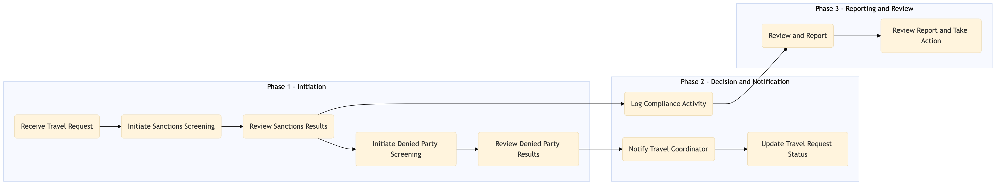

This process document outlines the steps for conducting Sanctions and Denied Party Screening within the TMC Duty of Care and Risk Management domain, ensuring compliance with regulatory requirements.
| Trigger | Initiation of a new travel request or modification to an existing one involving high-risk individuals or entities. |
| Outcome | Successful screening of all parties involved in the travel request, ensuring no sanctioned or denied party is included, thus maintaining compliance and mitigating risks. |
| Systems | SAP Concur T2 SAP Concur Expense AWS SageMaker Snowflake Tableau Salesforce Email SAP S/4HANA SAP Analytics Cloud |

Click to enlarge
| Step | Name & Pain Point | Role | System | Input | Output | KPI | Flags |
|---|---|---|---|---|---|---|---|
| 1.1 | Receive Travel Request Handling large volumes of travel requests simultaneously. | Travel Coordinator | SAP Concur T2, SAP Concur Expense | Travel request details including travelers' names and travel itinerary. | Travel request data processed for screening. | 95% accuracy in receiving and processing travel requests within 1 minute. | ⚠ Exception |
| 1.2 | Initiate Sanctions Screening Integration with multiple systems for real-time data processing. | Compliance Officer | AWS SageMaker, Snowflake | Traveler's personal information and itinerary details. | Sanctions screening results indicating compliance or non-compliance. | 100% accuracy in sanctions screening within 5 minutes. | ◆ Decision |
| 1.3 | Review Sanctions Results Handling false positives and ensuring accurate interpretation of results. | Compliance Officer | Tableau, Salesforce | Sanctions screening results. | Decision to approve or deny the travel request based on sanctions status. | 90% accuracy in decision-making within 1 minute. | ◆ Decision⚠ Exception |
| 1.4 | Initiate Denied Party Screening Integration with multiple systems for real-time data processing. | Compliance Officer | AWS SageMaker, Snowflake | Traveler's personal information and itinerary details. | Denied party screening results indicating compliance or non-compliance. | 100% accuracy in denied party screening within 5 minutes. | ◆ Decision |
| 1.5 | Review Denied Party Results Handling false positives and ensuring accurate interpretation of results. | Compliance Officer | Tableau, Salesforce | Denied party screening results. | Decision to approve or deny the travel request based on denied party status. | 90% accuracy in decision-making within 1 minute. | ◆ Decision⚠ Exception |
| 1.6 | Notify Travel Coordinator Ensuring timely communication of decisions. | Compliance Officer | Salesforce, Email | Decision to approve or deny the travel request. | Notification sent to Travel Coordinator with decision and reasoning. | 100% notification accuracy within 1 minute. | ⚠ Exception |
| 1.7 | Update Travel Request Status Handling large volumes of travel requests simultaneously. | Travel Coordinator | SAP Concur T2, SAP Concur Expense | Notification from Compliance Officer. | Travel request status updated in the system (Approved/Denied). | 95% accuracy in updating travel request status within 1 minute. | ⚠ Exception |
| 1.8 | Log Compliance Activity Maintaining accurate logs for regulatory audits. | Compliance Officer | SAP S/4HANA, SAP Analytics Cloud | Travel request details and compliance decision. | Compliance activity logged in the system for auditing purposes. | 100% logging accuracy within 1 minute. | ⚠ Exception |
| 1.9 | Review and Report Generating comprehensive reports from diverse data sources. | Compliance Officer | SAP Analytics Cloud, Tableau | Compliance activity logs. | Monthly compliance report generated for review. | 100% report accuracy within 24 hours of month-end. | ⚠ Exception |
| 1.10 | Review Report and Take Action Developing effective action plans based on complex data insights. | Compliance Officer | Salesforce, Email | Monthly compliance report. | Action plan developed to address any identified issues or trends. | 95% action plan accuracy within 1 week of report generation. | ◆ Decision⚠ Exception |